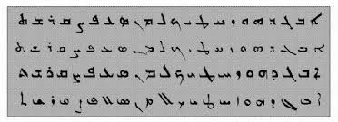

Welcome to Syriac.me, your online crash course in Syriac! Our goal is to teach you all of Syriac grammar according to the "Thackston Method," the method pioneered and developed by Harvard professor, Wheeler M. Thackston.
Special thanks to Annie Lin for helping create this website! View her website here
This page is under development. For more information, contact the webmaster